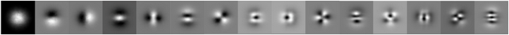
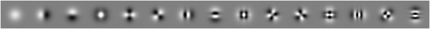
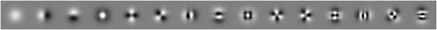

tools/covar
This program reproduces the key result in the seminal 1992 computer vision paper The Principal Components of Natural Images by Hancock et al. We perform the same experiment described in that paper using both HIPI and OpenCV, a powerful open-source computer vision library which can easily be integrated into HIPI jobs. We are able to analyze a much larger collection of images than the 15 used in the original paper. To understand this program, we need to first review a bit of linear algebra.
Our goal is to reveal statistical properties of the pixel values in small patches of typical images (e.g., snapshots, selfies, landscape photos, etc.). Why would this be useful? Well, this would tell us something about the structure of natural images and would provide a basis for certain image processing and compression algorithms. Specifically, we are interested in computing the second-order statistics, also called the covariance, which gives the expected value of the squared deviation across all pairs of pixels in a patch. It turns out that the eigenvectors of the covariance matrix reveal the dominant modes of variance across the set of input patches. Because these are so useful for many data analysis and compression tasks they are given the name principal components and this process is often called Principal Component Analysis.
Following Hancock et al. we will be using image patches that are 64 x 64 in size. Let's assume that we have collected n such patches by randomly sampling them from a set of images downloaded from the Internet. If we denote a single image patch by the vector x then the sample covariance computed from these n patches is given by the following formula:
where the subscript 'i' indexes the set of n images and x̄ is the average, or mean, image patch. Next, let's rewrite this expression in matrix form using x̂ to denote mean-centered patches (xi - x̄):
Writing the expression in this way makes it a bit easier to see how to compute the covariance matrix C using MapReduce. Our approach is to have each map task compute the product of a different submatrix (e.g., one map task will compute AAT, another will compute BBT, and so on) and the reduce task will perform the final aggregation to obtain C. Note, however, that the mean must be known ahead of time. Although there is a way to rewrite this computation that allows computing the mean and covariance with just one pass through the data, we chose this formulation for simplicity and because it illustrates how the Hadoop Distributed Filesystem (HDFS) can be used to pass data between Hadoop jobs. Our program consists of two MapReduce jobs; the first computes the mean and stores it on the HDFS, while the second uses the mean to compute the covariance.
After the covariance matrix is computed, you can use a variety of tools like MATLAB or Python to compute its eigenvectors and obtain the principal components. The HIPI distribution includes MATLAB and Python scripts for doing this (util/readFloatOpenCVMatWritable.m, util/displayPrincipalComponents.m, and util/showCovarianceOutput.py, respectively).
Below are the first 15 principal components reproduced from Hancock et al., which were computed using 20,000 patches, compared to the first 15 principal components obtained with our HIPI program for different values of n up to 10,000,000 patches (we used a random mix of images downloaded from Flickr):
Note that the principle components computed using the HIPI program do not perfectly correlate with the ones reported by Hancock et al., although in most cases they are off by a rotation. We attribute the remaining differences to differences in some parameters like the standard deviation of the Gaussian weighting function (more on this below). These differences may also be due in part to the fact that Hancock et al. used an approximation strategy for computing the principal components which avoids explicit construction of the full covariance matrix. Also, note that the principal components become much better resolved when going from 10,000 patches to 100,000 patches, but don't noticeably improve beyond that number of patches. Finally, note that these components resemble the Fourier or Discrete Cosine Transform basis, which is a central concept in many image compression algorithms such as JPEG.
Note that the source files for covar are stored in the tools/covar/src/main/java/org/hipi/tools/covar directory.
Covariance.java also contains the utility function convertFloatImageToGrayscaleMat(), which uses HIPI's OpenCV utilities to convert FloatImages with supported HipiColorSpaces into grayscale Mats. If the input FloatImage uses an unsupported HipiColorSpace (currently, if it isn't RGB or LUM), the mapper is informed that this particular input image should be skipped. This method is used by both MeanMapper.java and CovarianceMapper.java.
Again, for a more detailed description regarding how to configure a HIPI job, please refer to the hibDump tool.
The map() method defined in the CovarianceMapper class uses this average image patch to compute the sample covariance over 100 patches from within one image. Following the steps of the original paper, these patches are first converted to grayscale (as in the MeanMapper) and then Gaussian-masked before the covariance calculation. The Gaussian masking effectively gives higher weight to the center pixels in a patch (see Hancock et al. for details).
If you'd like to learn more about Principal Component Analysis, Singular Value Decomposition, and related topics from linear algebra, we recommend the excellent book Matrix Computations by Gene Golub.
Our goal is to reveal statistical properties of the pixel values in small patches of typical images (e.g., snapshots, selfies, landscape photos, etc.). Why would this be useful? Well, this would tell us something about the structure of natural images and would provide a basis for certain image processing and compression algorithms. Specifically, we are interested in computing the second-order statistics, also called the covariance, which gives the expected value of the squared deviation across all pairs of pixels in a patch. It turns out that the eigenvectors of the covariance matrix reveal the dominant modes of variance across the set of input patches. Because these are so useful for many data analysis and compression tasks they are given the name principal components and this process is often called Principal Component Analysis.
Following Hancock et al. we will be using image patches that are 64 x 64 in size. Let's assume that we have collected n such patches by randomly sampling them from a set of images downloaded from the Internet. If we denote a single image patch by the vector x then the sample covariance computed from these n patches is given by the following formula:
where the subscript 'i' indexes the set of n images and x̄ is the average, or mean, image patch. Next, let's rewrite this expression in matrix form using x̂ to denote mean-centered patches (xi - x̄):
Writing the expression in this way makes it a bit easier to see how to compute the covariance matrix C using MapReduce. Our approach is to have each map task compute the product of a different submatrix (e.g., one map task will compute AAT, another will compute BBT, and so on) and the reduce task will perform the final aggregation to obtain C. Note, however, that the mean must be known ahead of time. Although there is a way to rewrite this computation that allows computing the mean and covariance with just one pass through the data, we chose this formulation for simplicity and because it illustrates how the Hadoop Distributed Filesystem (HDFS) can be used to pass data between Hadoop jobs. Our program consists of two MapReduce jobs; the first computes the mean and stores it on the HDFS, while the second uses the mean to compute the covariance.
After the covariance matrix is computed, you can use a variety of tools like MATLAB or Python to compute its eigenvectors and obtain the principal components. The HIPI distribution includes MATLAB and Python scripts for doing this (util/readFloatOpenCVMatWritable.m, util/displayPrincipalComponents.m, and util/showCovarianceOutput.py, respectively).
Below are the first 15 principal components reproduced from Hancock et al., which were computed using 20,000 patches, compared to the first 15 principal components obtained with our HIPI program for different values of n up to 10,000,000 patches (we used a random mix of images downloaded from Flickr):
|  Hancock et al. - First 15 Principle Components (20,000 patches) |
 HIPI - First 15 Principle Components (10,000,000 patches) |
|  HIPI - First 15 Principle Components (1,000,000 patches) |
|  HIPI - First 15 Principle Components (100,000 patches) |
 HIPI - First 15 Principle Components (10,000 patches) |
Compiling
Compile covar by executing the following Gradle command in the HIPI examples directory (see our general notes on setting up HIPI on your system):
$> cd tools
$> gradle covar:jar
Usage
Run covar by executing the covar.sh script located in the tools directory. Run without any arguments to see usage:
$> ./covar.sh
covar takes two arguments. The first argument is the path to a HipiImageBundle (HIB) on the HDFS. This HIB will provide the image patches used to compute the mean and covariance. The second argument is the HDFS path to the output directory that will be created once the program has finished. Both the resulting mean patch and covariance matrix will be stored in this directory in a raw binary format readable by the scripts in the util directory.
How Covar Works
covar consists of two steps:- Compute the average (mean) of 100 randomly sampled patches taken from each image in the input HIB.
- Compute the covariance matrix using the same set of 100 patches per image along with the mean computed in the previous step.
Note that the source files for covar are stored in the tools/covar/src/main/java/org/hipi/tools/covar directory.
The Covar Driver
Every MapReduce job must specify a driver class that configures and executes the job (e.g., specifies the various key/value object types, etc.). The overarching driver class for the covariariance computation is Covariance.java, where main() is the primary entry point which calls the run() method. run() performs the two MapReduce jobs described above only if the first one succeeds. For more information about setting up and configuring a standard HIPI job, please look at the hibDump tool.Covariance.java also contains the utility function convertFloatImageToGrayscaleMat(), which uses HIPI's OpenCV utilities to convert FloatImages with supported HipiColorSpaces into grayscale Mats. If the input FloatImage uses an unsupported HipiColorSpace (currently, if it isn't RGB or LUM), the mapper is informed that this particular input image should be skipped. This method is used by both MeanMapper.java and CovarianceMapper.java.
The Two MapReduce Driver Classes
The driver classes for covar are defined in ComputeMean.java and ComputeCovariance.java. Because the two drivers are quite similar, only ComputeCovariance.java has been included below:
public class ComputeCovariance {
public static int run(String[] args, String inputHibPath, String outputDir, String inputMeanPath)
throws ClassNotFoundException, IllegalStateException, InterruptedException, IOException {
System.out.println("Running compute covariance.");
Job job = Job.getInstance();
job.setJarByClass(Covariance.class);
job.setInputFormatClass(HibInputFormat.class);
job.setMapOutputKeyClass(IntWritable.class);
job.setMapOutputValueClass(OpenCVMatWritable.class);
job.setOutputKeyClass(NullWritable.class);
job.setOutputValueClass(OpenCVMatWritable.class);
job.setMapperClass(CovarianceMapper.class);
job.setReducerClass(CovarianceReducer.class);
job.setNumReduceTasks(1);
job.setOutputFormatClass(BinaryOutputFormat.class);
FileInputFormat.setInputPaths(job, new Path(inputHibPath));
FileOutputFormat.setOutputPath(job, new Path(outputDir));
job.getConfiguration().setStrings("hipi.covar.mean.path", inputMeanPath);
return job.waitForCompletion(true) ? 0 : 1;
}
}
Both of the driver classes contain a static run() method which is called in Covariance.java. Important to note here is that the path to the result of ComputeMean is stored as a configuration parameter (hipi.covar.mean.path). This allows ComputeCovariance to read the result of ComputeMean from the HDFS. Also note that this tool outputs OpenCVMatWritables, which enable Hadoop to write and read Mat objects from the HDFS.Again, for a more detailed description regarding how to configure a HIPI job, please refer to the hibDump tool.
The Mean Mapper
Here is the map() method in the MeanMapper:
public void map(HipiImageHeader header, FloatImage image, Context context) throws IOException,
InterruptedException {
/////
// Perform conversion to OpenCV
/////
Mat cvImage = new Mat(image.getHeight(), image.getWidth(), opencv_core.CV_32FC1);
// if unable to convert input FloatImage to grayscale Mat, skip image and move on
if(!Covariance.convertFloatImageToGrayscaleMat(image, cvImage)) {
System.out.println("MeanMapper is skipping image with invalid color space.");
return;
}
/////
// Compute mean using OpenCV
/////
//patch dimensions (N X N)
int N = Covariance.patchSize;
Mat mean = new Mat(N, N, opencv_core.CV_32FC1, new Scalar(0.0));
//specify number of patches to use in mean patch computation (iMax * jMax patches)
int iMax = 10;
int jMax = 10;
//collect patches and add their values to mean patch mat
for (int i = 0; i < iMax; i++) {
int x = ((cvImage.cols() - N) * i) / iMax;
for (int j = 0; j < jMax; j++) {
int y = ((cvImage.rows() - N) * j) / jMax;
Mat patch = cvImage.apply(new Rect(x, y, N, N));
opencv_core.add(patch, mean, mean);
}
}
//scale mean patch mat based on total number of patches
mean = opencv_core.divide(mean, ((double) (iMax * jMax))).asMat();
context.write(new IntWritable(0), new OpenCVMatWritable(mean));
}
This code makes use of the convertFloatImageToGrayscaleMat() method described above in order convert the provided FloatImages into OpenCV Mats. This allows us to leverage the mature OpenCV library for image processing, where many basic matrix operations are already implemented (add, divide, etc). The Mean Reducer
Here is the reduce() method in the MeanReducer class:public void reduce(IntWritable key, IterableSince each of the partial means output by the map tasks were computed using the same number of patches, there is no need to weight these partial means differently in the final sum. Again, the OpenCVMatWritable class allows us to read OpenCV Mat objects directly from the HDFS.meanPatches, Context context) throws IOException, InterruptedException { int N = Covariance.patchSize; //consolidate mean patches from mapper Mat mean = new Mat(N, N, opencv_core.CV_32FC1, new Scalar(0.0)); int count = 0; for (OpenCVMatWritable patch : meanPatches) { opencv_core.add(patch.getMat(), mean, mean); count++; } //normalize consolidated mean patch if (count > 1) { mean = opencv_core.divide(mean, (double) count).asMat(); } //write out consolidated patch context.write(NullWritable.get(), new OpenCVMatWritable(mean)); }
The Covariance Mapper
Recall that the covariance calculation requires the average image patch. This object is accessed inside the Mapper:setup() method defined in CovarianceMapper:
// Access mean data on HDFS
String meanPathString = job.getConfiguration().get("hipi.covar.mean.path");
if(meanPathString == null) {
System.err.println("Mean path not set in configuration - cannot continue. Exiting.");
System.exit(1);
}
Path meanPath = new Path(meanPathString);
FSDataInputStream dis = FileSystem.get(job.getConfiguration()).open(meanPath);
// Populate mat with mean data
OpenCVMatWritable meanWritable = new OpenCVMatWritable();
meanWritable.readFields(dis);
mean = meanWritable.getMat();
} catch (IOException ioe) {
ioe.printStackTrace();
System.exit(1);
}
Because the MeanReducer used a NullWritable as the key to its output, the image can be read direcly from the HDFS without needing to skip any key-related components in the data stream. This behavior is defined in BinaryOutputFormat. The map() method defined in the CovarianceMapper class uses this average image patch to compute the sample covariance over 100 patches from within one image. Following the steps of the original paper, these patches are first converted to grayscale (as in the MeanMapper) and then Gaussian-masked before the covariance calculation. The Gaussian masking effectively gives higher weight to the center pixels in a patch (see Hancock et al. for details).
public void map(HipiImageHeader header, FloatImage image, Context context) throws IOException,
InterruptedException {
/////
// Perform conversion to OpenCV
/////
Mat cvImage = new Mat(image.getHeight(), image.getWidth(), opencv_core.CV_32FC1);
// if unable to convert input FloatImage to grayscale Mat, skip image and move on
if(!Covariance.convertFloatImageToGrayscaleMat(image, cvImage)) {
System.out.println("CovarianceMapper is skipping image with invalid color space.");
return;
}
/////
// Create patches for covariance computation
/////
// Specify number of patches to use in covariance computation (iMax * jMax patches)
int iMax = 10;
int jMax = 10;
Mat[] patches = new Mat[iMax * jMax];
int N = Covariance.patchSize;
// Create mean-subtracted and gaussian-masked patches
for (int i = 0; i < iMax; i++) {
int x = (cvImage.cols() - N) * i / iMax;
for (int j = 0; j < jMax; j++) {
int y = (cvImage.rows() - N) * j / jMax;
Mat patch = cvImage.apply(new Rect(x, y, N, N)).clone();
opencv_core.subtract(patch, mean, patch);
opencv_core.multiply(patch, gaussian, patch);
patches[(iMax * i) + j] = patch;
}
}
/////
// Run covariance computation
/////
// Stores the (N^2 x N^2) covariance matrix patchMat*transpose(patchMat)
Mat covarianceMat = new Mat(N * N, N * N, opencv_core.CV_32FC1, new Scalar(0.0));
// Stores patches as column vectors
Mat patchMat = new Mat(N * N, patches.length, opencv_core.CV_32FC1, new Scalar(0.0));
// Create patchMat
for(int i = 0; i < patches.length; i++) {
patches[i].reshape(0, N * N).copyTo(patchMat.col(i));
}
// Compute patchMat*transpose(patchMat)
covarianceMat = opencv_core.multiply(patchMat, patchMat.t().asMat()).asMat();
context.write(new IntWritable(0), new OpenCVMatWritable(covarianceMat));
}
The Covariance Reducer
The reduce() method in the CovarianceReducer class combines the partial covariances emitted by the map tasks into the final covariance. As with the reducer method for the mean program, each map task processes the same number of patches so there is no need to weight the partial covariances differently. The output of reduce() is simply the sum of these input covariances, again encapsulated in an OpenCVMatWritable object:public void reduce(IntWritable key, IterableThe output of covar consists of two files named <output directory>/mean-output/part-r-00000 and <output directory>/covariance-output/part-r-00000. These binary files can be viewed using a simple MATLAB or Python program. The HIPI distribution includes sample programs in each of these languages.values, Context context) throws IOException, InterruptedException { int N = Covariance.patchSize; Mat cov = new Mat(N * N, N * N, opencv_core.CV_32FC1, new Scalar(0.0)); // Consolidate covariance matrices for(OpenCVMatWritable value : values) { opencv_core.add(value.getMat(), cov, cov); } context.write(NullWritable.get(), new OpenCVMatWritable(cov)); }
If you'd like to learn more about Principal Component Analysis, Singular Value Decomposition, and related topics from linear algebra, we recommend the excellent book Matrix Computations by Gene Golub.